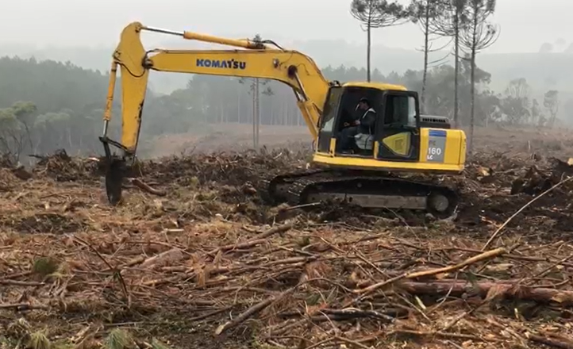
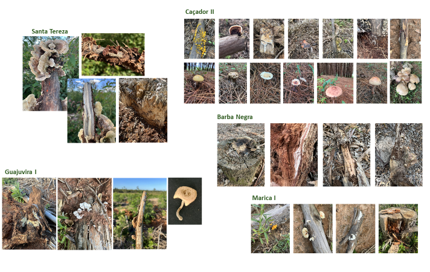
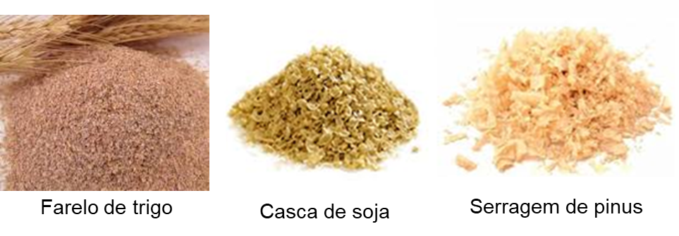
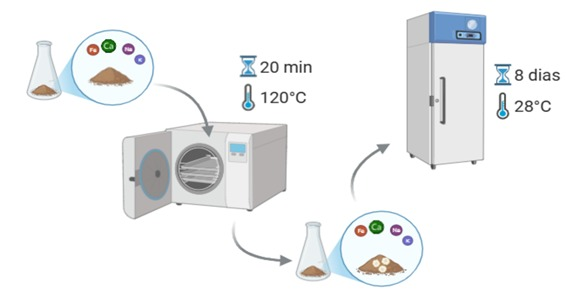
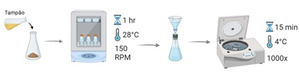
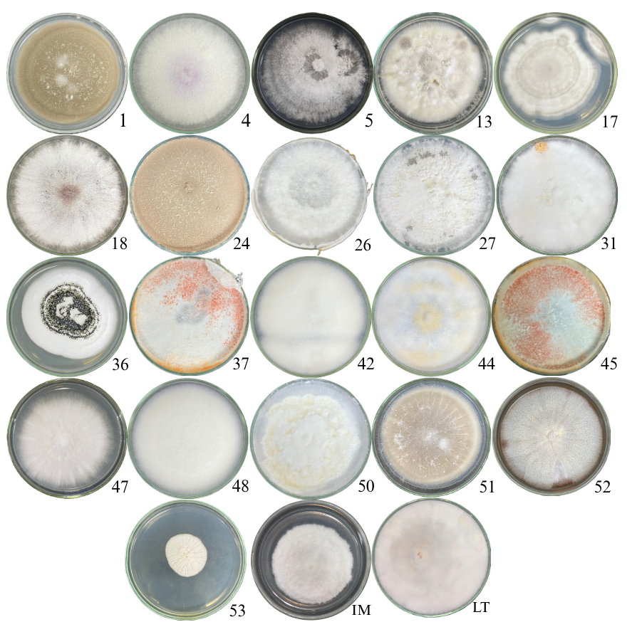
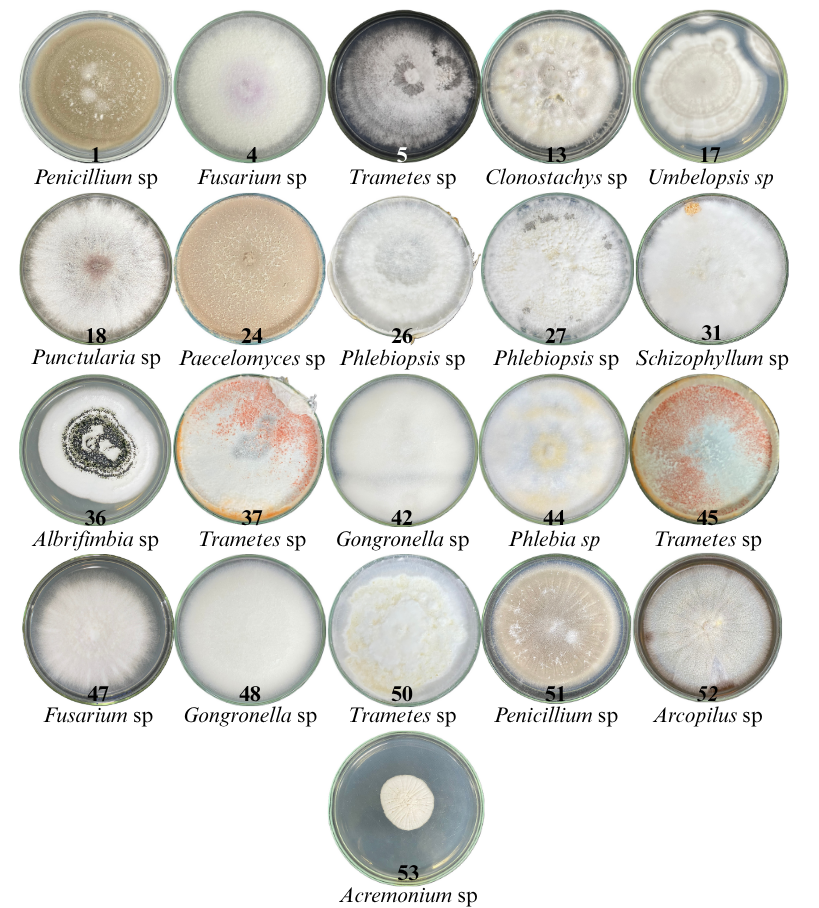
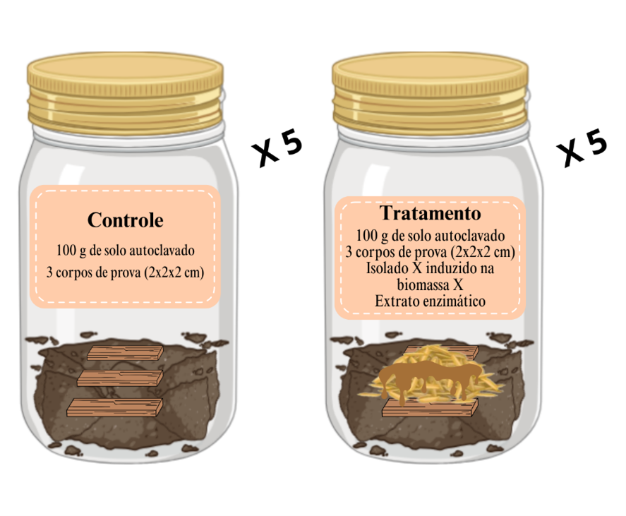
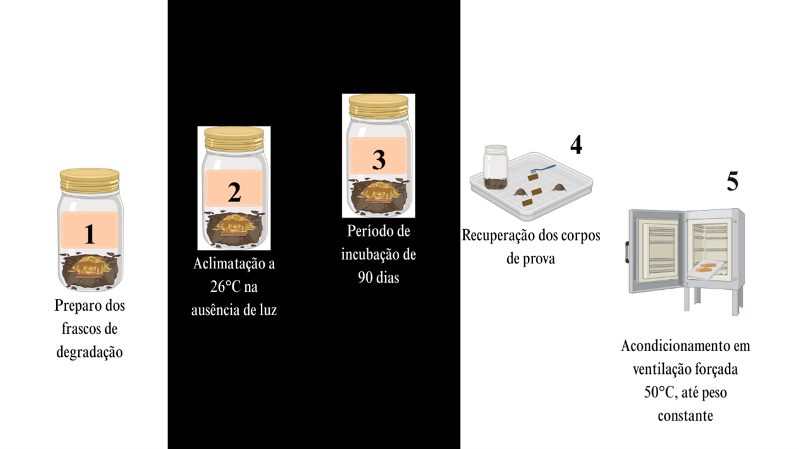
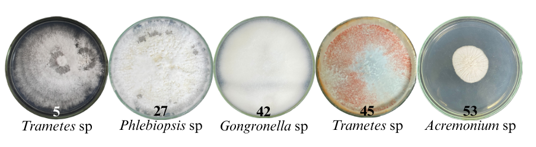

CONHECENDO A BIODESTOCA
DESENVOLVIMENTO DO SETOR FLORESTAL
Nos últimos anos, a silvicultura tem se expandido significativamente no Brasil, com destaque para as monoculturas de Eucalipto voltadas à produção de celulose. A rotação dessas plantações é relativamente curta, durando, em média, até 7 anos. Após dois ou mais ciclos consecutivos de cultivo, torna-se necessária a realização da destoca procedimento que visa remover tocos e raízes remanescentes, os quais dificultam o preparo do solo e o replantio. Atualmente, o método mais comum de destoca é o mecânico (Figura 1).

PROBLEMA SILVICULTURAL
No entanto, a destoca mecânica apresenta elevado custo e está associada a diversos impactos ambientais, como compactação do solo, redução da biodiversidade edáfica e desgaste prematuro de equipamentos e ergonomia dos recursos humanos.
Na busca de alternativas que visam contornar esses problemas, estudos vem sendo realizados para preencher essa lacuna no setor florestal, como o uso de microorganismos xilófagos para acelerar a biodegradação e facilitar ou mesmo substituir a destoca mecânica.
Hipótese principal e objetivo do projeto
Hipótese: Enzimas microbianas são capazes de acelerar a degração dos tocos remanescentes facilitando o preparo do solo para novos plantios.
Objetivo principal: Desenvolver um acelerador de decomposição biológico, formulado com enzimas lignocelulolíticas, agentes estabilizantes e microrganismos benéficos. Uma alternativa viável, ecologicamente correta e altamente promissora para acelerar o processo de biodegradação de tocos remanescentes no campo.
Perguntas e respostas
Quais microorganismos são produtores potenciais?
A escolha dos microorganismos deve se basear em alguns requisitos já estabelecidos na literatura:
devem ser fungos da podridão da madeira (podridão branca);
não patogênicos;
encontrados no subbosque de reflorestamentos.
Objetivo: Encontrar fungos xilófagos com potencial enzimático para serem aplicados na biodegradação acelerada de tocos remanescentes em reflorestamentos comerciais e realizar a identificação a nível de gênero os isolados selecionados.
1° passo: Coleta de materiais em reflorestamento
As coletas de madeira com sintomas de podridão e estruturas fúngicas foram realizadas em plantios de Pinus e Eucalipto em fazendas comerciais da empresa CMPC, nos estados do Rio Grande do Sul e Paraná. (Figura 2).

2° passo: Isolamento e coleção de culturas
Os materiais foram encaminhados ao Laboratório de Patologia Florestal, onde foi realizado o isolamento direto e indireto de diversos fungos, e culturas puras foram obtidas para criação da coleção de isolados fungicos a serem testados.
Resultado: Coleção de isolados CMPC
Foram obtidos 53 isolados fúngicos dos materiais coletados no Sul do Brasil.

Quanta diversidade, não é?!
3° passo: Triagem de perfis enzimáticos
Com a obtenção da coleção de fungos, a próxima etapa é a verificação das atividades enzimáticas de cada isolado para conhecer quais seriam produtores potenciais para aplicação. Para isso foram estabelecidas as enzimas de interesse, baseando-se nas enzimas protagosnistas na degradação dos componentes da parede celular vegetal (celulose, hemicelulose e lignina). São elas:
Xilanase;
Endoglucanase;
FPase;
Lacase;
β glicosidase;
β xilosidase.
Metodologia: Fermentação semissólida e Extração de Enzimas
Para isso, foram utilizados três substratos diferentes: Casca de soja, Farinha de trigo, Serragem de Pinus.

Etapa 1: Indução dos isolados nos substratos

Etapa 2: Extração das enzimas

Para medir a atividade de enzimas utilizou-se o método colorimétrico de Miller.
Para cada isolado foram realizadas 2 repetições com 3 réplicas em cada uma das biomassas.
Resultados: Melhores produtores de enzimas lignoceluloliticas
A partir das atividades enzimáticas, foram selecionados 21 isolados que apresentaram as melhores produções das enzimas de interesse, essa seleção, determinou a melhor biomassa indutora para cada organismo selecionado. Você pode conferir a estatistica de seleção, clicando aqui.

4° passo: Identificação a nivel de gênero dos isolados selecionados
Os isolados mais atrativos foram identificados através de PCR (Reação em Cadeia da Polimerase) e Sequenciamento de DNA. As sequências obtidas foram comparadas com bancos de dados para identificação dos gêneros.
Metodologia: Extração de DNA e PCR
Para extrair o DNA genômico total dos isolados, foi utilizado o kit de extração de DNA de fungos Wizard Promega, posteriormente amplificado pela reação em cadeia polimerase (PCR) de acordo com o protocolo fornecido pelo fabricante. A região ITS foi amplificada utilizando o par de primer ITS1/ITS4 (White et al.,1990), para casos específicos o par de primer ITS5/ITS4 foi utilizado, utilizando o seguinte protocolo:
desnaturação inicial a 96°C durante 5 minutos;
35 ciclos a 94°C por 30 segundos, 50°C por 30 segundos e 72°C por 1:30 minutos;
extensão final a 72°C durante 4 minutos.
O sequenciamento de DNA foi realizado e o processamento das sequências foi feito no programa SeqAssem, para obtenção da sequência contig, e a partir do SeqAssem, foi utilizada a ferramenta de alinhamento Blast, do Banco NCBI (ALTSCHUL et al., 1980). Sequências acima de 98% de identidade foram consideradas comoespécies equivalentes.
Resultado: Biodiversidade de Gêneros
Dentre os 14 gêneros identificados, predominam os ascomicetos com 9 isolados e 7 gêneros seguidos dos basidiomicetos com 9 isolados e 5 gêneros, sendo que a ordem Poliporales dentro do filo Basidiomycota apresenta maior frequência de isolados, isso porque o gênero Trametes sp, apresentou maior frequência de isolados.

Os microorganismos são efetivamente bons degradadores de madeira?
Os isolados selecionados devem passar por teste de degradação da madeira in vitro, seguindo algumas premissas:
Testes em condições estabelecidas em norma, com modificações;
Testados isoladamente em cavacos de madeira da cultura alvo;
Apresentar bons resultados em indices relacionados a madeira.
Objetivo: Realizar teste de degradação de madeira in vitro com os isolados fúngicos selecionados segundo o perfil enzimático e identificar a nível de espécie os isolados selecionados a partir do teste de degradação de madeira.
1° passo: Teste de Biodegradação acelerada da madeira
Esse teste busca entender melhor o efeito da degradação de microorganismo xilófago e sua interação com a madeira em condições controladas.
Metodologia: Teste de degradação in vitro
As amostras de madeira utilizadas pertencem ao híbrido de E. urophylla x E. grandis obtidos a partir de peças de madeira derivadas do caule, dimensionados em 2 x 2 x 1 cm, autoclavados a 121 ± 1°C por 20 minutos e mantidos em estufa a 50°C com ventilação forçada até aferição de peso constante. Em seguida, dispostos em dessecador para resfriamento e pesagem da massa inicial e dimensões aferidas para obtenção do volume.
Os testes de degradação foram montados em frascos descartáveis retangulares hermeticamente fechados, que receberam 100 g de solo obtido no Horizonte B, coletados em área de reflorestamento de Eucalipto, separado de raízes, folhas e microfauna, peneirado e autoclavado 121 ± 1°C por 45 minutos.
Cada frasco recebeu sobre a superfície do solo 3 corpos de prova. O tratamento consistiu da mistura do fungo cultivado em substrato por 8 dias a 28° C acrescido do respectivo extrato enzimático obtido na mesma condição de cultivo do fungo. No controle, os frascos receberam o solo e cavacos junto de solução tamponada, feito sob as mesmas condições na ausência do fungo e do substrato, esse processo foi realizado em câmara de fluxo laminar.

Após a montagem dos frascos, os mesmos foram aclimatados e incubados por 90 dias e recuperados com escova de nylon macia para serem acondicionados em ventilação forçada a 50°C, para obtenção de peso constante.

Resultados: Isolados selecionados a partir de Propriedades fisicas e químicas da madeira
A partir do peso inicial e peso final, foram obtidas: a perda de massa da madeira, perda de densidade aparente;
A partir de análise com equipamento específico foi obtida a perda de dureza da madeira.
As propriedades químicas da madeira foram avaliadas a partir da determinação da composição de celulose, hemicelulose, lignina e extrativos.
